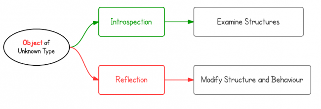

Java Reflection Tutorial
What is reflection, why is it useful, and how to use it?
1. What is reflection?
"Reflection is commonly used by programs which require the ability to examine or modify the runtime behavior of applications running in the Java virtual machine." This concept is often mixed with introspection. The following are their definitions from Wiki:
- Introspection is the ability of a program to examine the type or properties of an object at runtime.
- Reflection is the ability of a program to examine and modify the structure and behavior of an object at runtime.
From their definitions, introspection is a subset of reflection. Some languages support introspection, but do not support reflection, e.g., C++.

Introspection Example: The instanceof operator determines whether an object belongs to a particular class.
if(obj instanceof Dog){ Dog d = (Dog)obj; d.bark(); } |
Reflection Example: The Class.forName() method returns the Class object associated with the class/interface with the given name(a string and full qualified name). The forName method causes the class with the name to be initialized.
// with reflection Class<?> c = Class.forName("classpath.and.classname"); Object dog = c.newInstance(); Method m = c.getDeclaredMethod("bark", new Class<?>[0]); m.invoke(dog); |
In Java, reflection is more about introspection, because you can not change structure of an object. There are some APIs to change accessibilities of methods and fields, but not structures.
2. Why do we need reflection?
Reflection enables us to:
- Examine an object's class at runtime
- Construct an object for a class at runtime
- Examine a class's field and method at runtime
- Invoke any method of an object at runtime
- Change accessibility flag of Constructor, Method and Field
- etc.
Reflection is the common approach of famework.
For example, JUnit use reflection to look through methods tagged with the @Test annotation, and then call those methods when running the unit test. (Here is a set of examples of how to use JUnit.)
For web frameworks, product developers define their own implementation of interfaces and classes and put is in the configuration files. Using reflection, it can quickly dynamically initialize the classes required.
For example, Spring uses bean configuration such as:
<bean id="someID" class="com.programcreek.Foo"> <property name="someField" value="someValue" /> </bean> |
When the Spring context processes this < bean > element, it will use Class.forName(String) with the argument "com.programcreek.Foo" to instantiate that Class. It will then again use reflection to get the appropriate setter for the < property > element and set its value to the specified value.
The same mechanism is also used for Servlet web applications:
<servlet> <servlet-name>someServlet</servlet-name> <servlet-class>com.programcreek.WhyReflectionServlet</servlet-class> <servlet> |
3. How to use reflection?
How to use reflection API can be shown by using a small set of typical code examples.
Example 1: Get class name from object
package myreflection; import java.lang.reflect.Method; public class ReflectionHelloWorld { public static void main(String[] args){ Foo f = new Foo(); System.out.println(f.getClass().getName()); } } class Foo { public void print() { System.out.println("abc"); } } |
Output:
myreflection.Foo
Example 2: Invoke method on unknown object
For the code example below, image the types of an object is unknown. By using reflection, the code can use the object and find out if the object has a method called "print" and then call it.
package myreflection; import java.lang.reflect.Method; public class ReflectionHelloWorld { public static void main(String[] args){ Foo f = new Foo(); Method method; try { method = f.getClass().getMethod("print", new Class<?>[0]); method.invoke(f); } catch (Exception e) { e.printStackTrace(); } } } class Foo { public void print() { System.out.println("abc"); } } |
abc
Example 3: Create object from Class instance
package myreflection; public class ReflectionHelloWorld { public static void main(String[] args){ //create instance of "Class" Class<?> c = null; try{ c=Class.forName("myreflection.Foo"); }catch(Exception e){ e.printStackTrace(); } //create instance of "Foo" Foo f = null; try { f = (Foo) c.newInstance(); } catch (Exception e) { e.printStackTrace(); } f.print(); } } class Foo { public void print() { System.out.println("abc"); } } |
Example 4: Get constructor and create instance
package myreflection; import java.lang.reflect.Constructor; public class ReflectionHelloWorld { public static void main(String[] args){ //create instance of "Class" Class<?> c = null; try{ c=Class.forName("myreflection.Foo"); }catch(Exception e){ e.printStackTrace(); } //create instance of "Foo" Foo f1 = null; Foo f2 = null; //get all constructors Constructor<?> cons[] = c.getConstructors(); try { f1 = (Foo) cons[0].newInstance(); f2 = (Foo) cons[1].newInstance("abc"); } catch (Exception e) { e.printStackTrace(); } f1.print(); f2.print(); } } class Foo { String s; public Foo(){} public Foo(String s){ this.s=s; } public void print() { System.out.println(s); } } |
Output:
null abc
In addition, you can use Class instance to get implemented interfaces, super class, declared field, etc.
Example 5: Change array size though reflection
package myreflection; import java.lang.reflect.Array; public class ReflectionHelloWorld { public static void main(String[] args) { int[] intArray = { 1, 2, 3, 4, 5 }; int[] newIntArray = (int[]) changeArraySize(intArray, 10); print(newIntArray); String[] atr = { "a", "b", "c", "d", "e" }; String[] str1 = (String[]) changeArraySize(atr, 10); print(str1); } // change array size public static Object changeArraySize(Object obj, int len) { Class<?> arr = obj.getClass().getComponentType(); Object newArray = Array.newInstance(arr, len); //do array copy int co = Array.getLength(obj); System.arraycopy(obj, 0, newArray, 0, co); return newArray; } // print public static void print(Object obj) { Class<?> c = obj.getClass(); if (!c.isArray()) { return; } System.out.println("\nArray length: " + Array.getLength(obj)); for (int i = 0; i < Array.getLength(obj); i++) { System.out.print(Array.get(obj, i) + " "); } } } |
Output:
Array length: 10 1 2 3 4 5 0 0 0 0 0 Array length: 10 a b c d e null null null null null
Summary
The above code examples shows a very small set of functions provided by Java reflection. Reading those examples may only give you a taste of Java reflection, you may want to Read more information on Oracle website.
References:
1. http://en.wikipedia.org/wiki/Reflection_(computer_programming)
2. http://docs.oracle.com/javase/tutorial/reflect/
<pre><code> String foo = "bar"; </code></pre>
-
Mandar Vaidya
-
naim
-
Tim